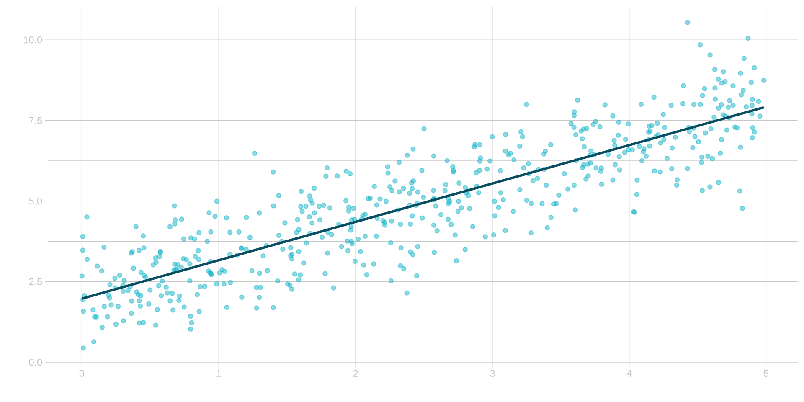
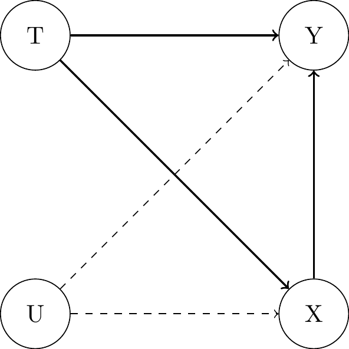

(3) Randomized Experiments
Causal Data Science for Business Analytics
Hamburg University of Technology
Tuesday, 14. May 2024
Randomized Experiments
Randomizing
- Randomized treatment assignment:
- \(P(T_i = t) = \frac{1}{k}\) where \(k\) is the number of treatment groups / values
Definition 3.1: “Covariate Balance”
We have covariate balance if the distribution of covariates \(\mathbf{X}\) is the same across treatment groups.
Formally:
\(P(\mathbf{X} | T = t) \stackrel{d}{=} P(\mathbf{X} | T = t')\) for all \(t, t'\).
\(\mathbf{X} \perp\!\!\!\perp T\).
- Randomization implies covariate balance, across all covariates, even unobserved ones.
Randomizing: “Association becomes Causation”
Perspective 1a: "Graphical Models: Backdoor Adjustment"- Let \(\mathbf{X}\) be a sufficient adjustment including all (un-) observed confounders, hence:
- \(P(Y | do(T = t)) = \sum_x P(Y | T = t, \mathbf{X} = \mathbf{x})P(\mathbf{X})\)
- By multiplying by \(\frac{P(T = t | \mathbf{X} = \mathbf{x})}{P(T = t | \mathbf{X} = \mathbf{x})}\), we get the joint distribution in the numerator:
- \(P(Y | do(T = t)) = \sum_x \frac{P(Y | T= t, \mathbf{X} = \mathbf{x})P(T = t | \mathbf{X} = \mathbf{x})P(x)}{P(T = t | \mathbf{X} = \mathbf{x})} = \sum_x \frac{P(Y, T, \mathbf{X})}{P(T = t | \mathbf{X} = \mathbf{x})}\)
- Now, we use the important result from randomization that \(\mathbf{X} \perp\!\!\!\perp T\):
- \(P(Y | do(T = t)) = \sum_x \frac{P(Y, T, \mathbf{X})}{P(T)}\)
- By definition of conditional probabilities and marginalization we obtain q.e.d.:
- \(P(Y | do(T = t)) = \sum_x P(Y, \mathbf{X} | T = t) = P(Y | T = t)\)
- Let \(\mathbf{X}\) be a sufficient adjustment including all (un-) observed confounders, hence:
Randomizing: “Association becomes Causation”
Perspective 1b: "Graphical Models: do-Operator"- all backdoor paths are blocked
- i.e. backdoor adjustment on empty set \(\emptyset\) suffices
- \(P(Y | \text{do}(T = t)) = P(Y | T = t)\)


Randomizing: “Association becomes Causation”
Perspective 2: "Potential Outcomes" (Review & Extension)"- Causation:
- \(ATE_{cs} = \mathbb{E}[Y_i(1) - Y_i(0)]\)
- Extend by probability \(p\) of being in a subgroup:
- \(ATE_{cs} = p\underbrace{(\mathbb{E}[Y_i(1) - Y_i(0)|T_i=1])}_{\text{ATT}} + (1-p)\underbrace{(\mathbb{E}[Y_i(1) - Y_i(0)|T_i=0])}_{\text{ATU}}\)
- \(ATE_{cs} = p\mathbb{E}[Y_i(1)|T_i=1] - p\mathbb{E}Y_i(0)|T_i=1] + (1-p)\mathbb{E}[Y_i(1)|T_i=0] - (1-p)\mathbb{E}Y_i(0)|T_i=0]\)
- \(ATE_{cs} = p\mu_{11} - p\mu_{01} + (1-p)\mu_{10} - (1-p)\mu_{00}\)
- Association:
- \(ATE_{as} = \mathbb{E}[Y_i|T_i=1] - \mathbb{E}[Y_i|T_i=0] = \mathbb{E}[Y_i(1)|T_i=1] - \mathbb{E}[Y_i(0)|T_i=0] = \mu_{11} - \mu_{00}\)
- Add & subtract ATE:
- \(ATE_{as} = \color{#00C1D4}{ATE} + \mu_{11} - \mu_{00} - \color{#00C1D4}{p\mu_{11} + p\mu_{01} - (1-p)\mu_{10} + (1-p)\mu_{00}}\)
- Add & subtract \((1-p)\mu_{01}\):
- \(ATE_{as} = ATE + \mu_{11} - \mu_{00} - p\mu_{11} + \underbrace{p\mu_{01} \color{#00C1D4}{+ (1-p)\mu_{01}}}_{=\mu_{01}} - (1-p)\mu_{10} + (1-p)\mu_{00} \color{#00C1D4}{- (1-p)\mu_{01}}\)
- Causation:
Randomizing: “Association becomes Causation”
Perspective 2: "Potential Outcomes" (Review & Extension)"- Rearrange:
- \(ATE_{as} = ATE + \mu_{01} - \mu_{00} + \underbrace{\mu_{11} - p\mu_{11}}_{=(1-p)\mu_{11}} - (1-p)\mu_{10} + (1-p)\mu_{00} - (1-p)\mu_{01}\)
- \(ATE_{as} = ATE + \mu_{01} - \mu_{00} + (1-p)[\underbrace{\mu_{11} - \mu_{01}}_{\text{ATT}} - \underbrace{(\mu_{10} - \mu_{00})}_{\text{ATU}}]\)
- Therefore:
- Rearrange:
\[ \begin{align} ATE_{as} &= \underbrace{\mathbb{E}[Y_i(1) - Y_i(0)]}_{ATE_{cs}} \\ &+ \underbrace{\mathbb{E}[Y_i(0)|T_i=1] - \mathbb{E}Y_i(0)|T_i=0]}_{\text{Confounding Bias}} \\ &+ \underbrace{(1-\mathbb{E}[T_i])[\underbrace{\mathbb{E}[Y_i(1)|T_i=1] - \mathbb{E}[Y_i(0)|T_i=1]}_{\text{ATT}} - \underbrace{(\mathbb{E}[Y_i(1)|T_i=0] - \mathbb{E}[Y_i(0)|T_i=0])}_{\text{ATU}}]}_{\text{Heterogeneity Bias}} \end{align} \]
Randomizing: “Association becomes Causation”
Perspective 2: "Potential Outcomes - Exchangeability"implies \(\{Y(1), Y(0)\} \perp\!\!\!\perp T\).- Exchangeability before treatment: \(\color{#00C1D4}{\mathbb{E}[Y_i(0)|T_i=0] = \mathbb{E}[Y_i(0)|T_i=1] = \mathbb{E}[Y_i(0)]}\)
- Exchangeability after treatment: \(\color{#FF7E15}{\mathbb{E}[Y_i(1)|T_i=1] = \mathbb{E}[Y_i(1)|T_i=0] = \mathbb{E}[Y_i(1)]}\)
\[ \begin{align} ATE_{as} &= \underbrace{\mathbb{E}[Y_i(1) - Y_i(0)]}_{ATE_{cs}} \\ &+ \underbrace{\mathbb{E}[Y_i(0)|T_i=1] - \mathbb{E}Y_i(0)|T_i=0]}_{\color{#00C1D4}{\text{Confounding Bias = 0}}} \\ &+ \underbrace{(1-\mathbb{E}[T_i])[\underbrace{\mathbb{E}[Y_i(1)|T_i=1] - \mathbb{E}[Y_i(0)|T_i=1]}_{\text{ATT}} - \underbrace{(\mathbb{E}[Y_i(1)|T_i=0] - \mathbb{E}[Y_i(0)|T_i=0])}_{\text{ATU}}]}_{\color{#FF7E15}{\text{Heterogeneity Bias = 0}}} \end{align} \]
Effect Identification
Identification of ATE in Experiments
Identification:- expressing the inherently unobservable ATE in terms of observable quantities.
- remove confounding and heterogeneity bias by randomization or addional assumptions.
- Using randomization of \(T\), the mean comparison identifies the ATE:
- \(\tau_{\text{ATE}} = \mathbb{E}[Y_i(1) - Y_i(0)] = \mathbb{E}[Y_i|T_i=1] - \mathbb{E}[Y_i|T_i=0]\)
- Mean comparison in a sample (rather than the population) is given by:
- \(\hat{\tau}_{\text{ATE}} = \frac{1}{\sum_i T_i} \sum_i T_i Y_i - \frac{1}{\sum_i (1 - T_i)} \sum_i (1 - T_i) Y_i\)
Identification of ATE in Experiments: Example
- Experiment conducted between November 1994 and February 1996:
- Randomized access to Job Corps: education program financed by the U.S. Department of Labor that targets disadvantaged individuals aged 16 to 24.
Source: Schochet, Burghardt, and Glazerman (2001); Schochet, Burghardt, and McConnell (2008).
- Assess the ATE of the program on the weekly earnings in the fourth year after the assignment among 9.240 individuals.
Identification of CATE in Experiments
- Also
conditional independenceholds in a properly randomized experiment:- \(\{Y(1), Y(0)\} \perp\!\!\!\perp T | X\)
- \(\{Y(1), Y(0)\} \perp\!\!\!\perp T | X\)
- Hence, the
Conditional Average Treatment Effect (CATE)is also identified:- \(\tau_{\text{CATE}}(x) = \mathbb{E}[Y_i(1) - Y_i(0)|X_i=x] = \mathbb{E}[Y_i|T_i=1, X_i=x] - \mathbb{E}[Y_i|T_i=0, X_i=x]\)
- Note that we condition on variables that are not affected by the treatment (e.g., pre-treatment covariates \(X\))
- This is implied by writing \(X\) and not \(X(T)\).
- We will learn about estimators of CATEs in an own session on
Effect Heterogeneity.
Effect Identification by Linear Regression
- ATE as mean comparison can also be expressed as a linear regression problem:
- Start with the observed outcome for each i:
- \(Y_i = Y_i(1) * T_i + Y_i(0) * (1 - T_i)\)
- \(Y_i = Y_i(0) + (Y_i(1) - Y_i(0)) * T_i\)
- Take the conditional expectation of this expression given T in the population:
- \(\mathbb{E}[Y_i|T_i] = \mathbb{E}[Y_i(0) + (Y_i(1) - Y_i(0)) * T_i]\)
- \(\mathbb{E}[Y_i|T_i] = \mathbb{E}[Y_i(0)|T_i] + ( \mathbb{E}[Y_i(1)|T_i] - \mathbb{E}[Y_i(0)|T_i] ) * T_i\)
- With ignorability/ exchangeability we obtain:
- \(\mathbb{E}[Y_i|T_i] = \underbrace{\mathbb{E}[Y_i|T_i = 0]}_{\beta_0} + \underbrace{( \mathbb{E}[Y_i|T_i = 1] - \mathbb{E}[Y_i|T_i = 0] )}_{\beta_1} * T_i\)
Effect Identification by Linear Regression
- \(\epsilon\) is commonly referred to as error term or residual and formally defined as follows:
- \(\epsilon_i = Y_i - \underbrace{(\beta_0 + \beta_1 * T_i)}_{\mathbb{E}[Y_i|T_i]}\)

Estimation By Linear Regression
- We obtain the ATE based on linear regression by minimizing the sum of squared residuals in the sample:
- \(\hat{\beta_0}, \hat{\beta_1} = \arg \min_{\beta_0^*, \beta_1^*} \sum_{i=1}^{n} \underbrace{(Y_i - \beta_0^* - \beta_1^* T_i)^2}_{\epsilon_i}\)
- Solving this minimization problem yields the following parameter estimates:
- \(\hat{\beta_1} = \frac{\text{Cov}(Y_i, T_i)}{\text{Var}(T_i)}, \text{ where}\)
- \(\text{Cov}(Y_i, T_i) = \frac{1}{n - 1} \sum_{i=1}^{n} \left(Y_i - \frac{1}{n}\sum_{i=1}^{n}Y_i\right)\left(T_i - \frac{1}{n}\sum_{i=1}^{n}T_i\right), \text{and}\)
- \(\text{Var}(T_i) = \frac{1}{n - 1} \sum_{i=1}^{n} \left(T_i - \frac{1}{n}\sum_{i=1}^{n}T_i\right)^2\)
- \(\hat{\beta_0} = -\frac{1}{n}\sum_{i=1}^{n} Y_i - \hat{\beta_1}\frac{1}{n}\sum_{i=1}^{n} T_i\)
Statistical Inference
Properties of Regression Estimates
Unbiased: on average, equal to the true parameter values across different samples:- \(\mathbb{E}[\hat{\beta_1}] = \beta_1, \text{ and}\)
- \(\mathbb{E}[\hat{\beta_0}] = \beta_0\)
Consistent: converges in probability to the true parameter values as sample size increases:- \(\hat{\beta_1} \xrightarrow{p} \beta_1, \text{ and}\)
- \(\hat{\beta_0} \xrightarrow{p} \beta_0\)
Asymptotically normally distributed: follows a normal distribution across suffciently large samples:- \(\sqrt{n}(\hat{\beta_1} - \beta_1) \xrightarrow{d} \mathcal{N}(0, \sigma^2_{\beta_1}), \text{ and}\)
- \(\sqrt{n}(\hat{\beta_0} - \beta_0) \xrightarrow{d} \mathcal{N}(0, \sigma^2_{\beta_0})\)
Note: We skip the proofs here. They can be found in any introductory econometrics textbook such as Wooldridge (2010): Econometric Analysis of Cross Section and Panel Data (MIT Press) .
Inference Goals
- Quantifying the precision or uncertainty of the parameter estimates:
- With which error probability can we rule out that the ATE is equal to zero (or some other value we are interested in) in the population, given the ATE estimate in our sample?
- What is the range or interval of values that likely includes the ATE in the population, given the finndings in our sample?
Standard errors (SE): measure the variability of the estimated ATE across different samplesHypothesis tests: assess whether the estimated ATE is statistically different from zeroConfidence intervals (CI): provide a range of plausible values for the true ATE
Standard Errors
- Asymptotic variance of the ATE unknown as it relies on population parameters:
- \(\text{Var}(\hat{\beta_1}) = \frac{\mathbb{E}[\epsilon^2 \cdot (T_i - \mathbb{E}[T_i])^2]}{n \cdot (\text{Var}(T_i))^2}\)
- Start with a variance estimator of ATE in the sample:
- \(\widehat{\text{Var}}(\hat{\beta_1}) = \frac{\frac{1}{n} \sum_{i=1}^{n} \hat{\epsilon}_i^2 \cdot \left( T_i - \frac{1}{n} \sum_{i=1}^{n} T_i \right)^2}{n \cdot \left( \widehat{\text{Var}}(T_i) \right)^2}\) with \(\hat{\epsilon}_i = Y_i - \hat{\beta_0} - \hat{\beta_1} T_i\)
- Standard error of the ATE estimate:
- \(se(\hat{\beta_1}) = \sqrt{\widehat{\text{Var}}(\hat{\beta_1})}\)
- Obtain the standard normal vs t distribution:
- \(z_1 = \frac{\hat{\beta_1} - \beta_1}{sd(\hat{\beta_1})} \xrightarrow{d} \mathcal{N}(0, 1)\) vs \(t_1 = \frac{\hat{\beta_1} - \beta_1}{se(\hat{\beta_1})} \sim t_{n-2}\)
t-Distribution
- The t-distribution is a family of distributions indexed by the degrees of freedom (df):
- \(t_{df} = \frac{Z}{\sqrt{V/df}}\), where \(Z \sim \mathcal{N}(0, 1)\) and \(V \sim \chi^2(df)\)
- How likely is a specific t-value computed from a sample if the true ATE in the population is zero?


Hypothesis Testing
- Step 1: Define the null hypothesis \(H_0\) and alternative hypothesis \(H_1\):
- Two-sided, undirected test:
- \(H_0\): \(\beta_1 = 0\) and \(H_1\): \(\beta_1 \neq 0\)
- One-sided, directed test:
- \(H_0\): \(\beta_1 \leq 0\) and \(H_1\): \(\beta_1 > 0\)
- \(H_0\): \(\beta_1 \geq 0\) and \(H_1\): \(\beta_1 < 0\)
- Two-sided, undirected test:
- Step 2: Set the significance level \(\alpha\):
- maximally accepted type I error probability of incorrectly rejecting H0 and accepting H1
- \(\alpha = 0.05\) implies that the error probability must not exceed 5%
- other conventional levels of significance are 0.01 (1%) or 0.1 (10%)
Hypothesis Testing
- Step 3: Compute the critical value \(c\):
- Quantile in the t-distribution that corresponds to \(\alpha\), given \(H_0\) is true
- Two-sided, undirected test and \(\alpha = 0.05\): \(c = t_{\alpha/2 = 0.025, 1000-2} = 1.96\)
- One-sided, directed test and \(\alpha = 0.05\): \(c = t_{\alpha = 0.05, 1000-2} = 1.65\)
- Step 4: Compute the t-statistic and p-value:
Test statistic: \(t_1 = \frac{\hat{\beta_1} - 0}{se(\hat{\beta_1})}\)p-value: probability of observing a test statistic as extreme as \(t_1\) under the null hypothesis- Two-sided, undirected test: \(p = Pr(|A| \geq |t_1|)\)
- One-sided, directed test: \(p = Pr(A \geq t_1)\) or \(p = Pr(A \leq t_1)\)
- In a two-sided, undirected test, verify that:
- \(|t_1| > c\); \(p < \alpha/2\)
- In a one-sided, directed test, verify that:
- \(t_1 > c\) or \(t_1 < -c\); \(p < \alpha\)
Confidence Intervals
Range of ATE values such that the true ATE \(\beta_1\) is included with probability \(1-\alpha\), based on the estimated ATE \(\hat{\beta_1}\) and the standard error \(se(\hat{\beta_1})\) obtained in the sample
Constructed in such a way that in the (hypothetical) case that we could draw many samples and construct confidence intervals in all those samples, a share of \(1-\alpha\) confidence intervals would include the true \(\beta_1\)
Two-sided confidence interval:- \(CI = \hat{\beta_1} \pm c \cdot se(\hat{\beta_1})\)
- e.g. \(CI = 0.3 \pm 1.96 \cdot 0.05 = [0.202, 0.398]\)
One-sided confidence interval:- \(CI = \hat{\beta_1} + c \cdot se(\hat{\beta_1})\)
- e.g. \(CI = 0.3 - 1.65 \cdot 0.05 = [0.2175, \infty]\)
R-squared
In general: percentage of variance in the outcome \(Y\) that is explained by all variables in the model:- \(R^2 = 1 - \frac{SSR}{SST}\)
- \(SSR = \sum_{i=1}^{n} (Y_i - \hat{Y_i})^2\)
- \(SST = \sum_{i=1}^{n} (Y_i - \bar{Y})^2\)
Specific case: just one binary treatment variable \(T\) in the model:- \(R^2 = r^2\) where \(r\) is the correlation between \(Y\) and \(T\)
- \(R^2 = \left( \frac{\sum_{i=1}^{n} (Y_i - \bar{Y})(T_i - \bar{T})}{\sqrt{\sum_{i=1}^{n} (Y_i - \bar{Y})^2} \cdot \sqrt{\sum_{i=1}^{n}(T_i - \bar{T})^2}} \right)^2\)
ATE in Experiments: Regression Example
- Assess the ATE of the program on the weekly earnings in the fourth year after the assignment among 9.240 individuals.
library(causalweight) # load causalweight package
library(sandwich) # load sandwich package
library(modelsummary) # load modelsummary package)
data(JC) # load JC data
T=JC$assignment # define treatment (assignment to JC)
Y=JC$earny4 # define outcome (earnings in fourth year)
ols=lm(Y~T) # run OLS regression
# display results
modelsummary(ols, vcov = sandwich::vcovHC,
estimate = "est = {estimate} (se = {std.error}, t = {statistic}){stars}",
statistic = "p = {p.value}, CI = [{conf.low}, {conf.high}]",
gof_map = c("r.squared")) | (1) | |
|---|---|
| (Intercept) | est = 197.926 (se = 3.073, t = 64.416)*** |
| p = <0.001, CI = [191.903, 203.949] | |
| T | est = 16.055 (se = 4.074, t = 3.941)*** |
| p = <0.001, CI = [8.069, 24.041] | |
| R2 | 0.002 |
Bootstrapping
Bootstrap sampling: \(B\) randomly drawn samples of the same size as the original sample, with replacement- Calculate the ATE in each bootstrap sample via regression

Source: Huber, Martin (2023). Causal analysis: Impact evaluation and Causal Machine Learning with applications in R. MIT Press, 2023.
- Calculate the standard error by: \(se(\hat{\beta_1}) = \sqrt{\frac{1}{B - 1} \sum_{b=1}^{B} \left(\hat{\beta_1^b} - \frac{1}{B}\sum_{b=1}^{B}\hat{\beta_1^b}\right)^2}\)
ATE in Experiments: Bootstrapping Example
- Assess the ATE of the program on the weekly earnings in the fourth year after the assignment among 9.240 individuals.
library(causalweight) # load causalweight package
library(boot) # load boot package
data(JC) # load JC data
T=JC$assignment # define treatment (assignment to JC)
Y=JC$earny4 # define outcome (earnings in fourth year)
bootdata=data.frame(Y,T) # data frame with Y,D for bootstrap procedure
bs=function(data, indices) { # defines function bs for bootstrapping
dat=data[indices,] # creates bootstrap sample according to indices
coefficients=lm(dat)$coef # estimates coefficients in bootstrap sample
return(coefficients) # returns coefficients
} # closes the function bs
set.seed(1) # set seed
results = boot(data=bootdata, statistic=bs, R=1999) # 1999 bootstrap estimations
results # displays the results
ORDINARY NONPARAMETRIC BOOTSTRAP
Call:
boot(data = bootdata, statistic = bs, R = 1999)
Bootstrap Statistics :
original bias std. error
t1* 197.92584 0.02480312 3.013465
t2* 16.05513 -0.02075945 3.954810tstat=results$t0[2]/sd(results$t[,2]) # compute the t-statistic
2*pnorm(-abs(tstat)) # compute the p-value asssuming standard normal distribution T
4.914718e-05 Extensions
Multivalued Treatments
- Treatment can take on discrete values, which can be ordered or unordered:
- \(T = 0, 1, 2, ...\): 0 = 0 weeks of training, 1 = 1 week of training, 2 = 2 weeks of training, …
- \(T = A, B, C, ...\): A = no training, B = IT training, C = management training, …
- Independence assumption can be adapted to hold for any treatment value:
- \(Y_i(0), Y_i(1), Y_i(2), ..., Y_i(J) \perp\!\!\!\perp T_i\)
- Analyze the ATEs of each non-zero treatment in a linear regression by including binary dummy variables for each:
- \(\mathbb{E}[Y_i | T_i] = \underbrace{\beta_0}_{E[Y_i | T_i=0]} + \underbrace{\beta_1}_{E[Y_i | T_i=1] - E[Y_i | T_i=0]} T_{i1} + \underbrace{\beta_2}_{E[Y_i | T_i=2] - E[Y_i | T_i=0]} T_{i2} + \dots + \underbrace{\beta_J}_{E[Y_i | T_i=J] - E[Y_i | T_i=0]} T_{iJ}\)
- \(T_{ij} = 1\) if \(T_i = j\) and \(T_{ij} = 0\) otherwise
Multivalued Treatments: Example
- Assess wage expectations (measure in brackets of 500 EUR) of 804 university students based on two-level treatment:
treatmentinformation: Graph with information on monthly gross private sector earnings shown.treatmentorder: Reversed order of questions about professional and personal preferences (“framing”).
library(causalweight) # load causalweight package
data(wexpect) # load wexpect data
T1=wexpect$treatmentinformation # define first treatment (wage information)
T2=wexpect$treatmentorder # define second treatment (order of questions)
Y=wexpect$wexpect2 # define outcome (wage expectations)
ols=lm(Y~T1+T2) # run OLS regression
# display results
modelsummary(ols, vcov = sandwich::vcovHC, estimate = "est = {estimate} (se = {std.error}, t = {statistic}){stars}", statistic = "p = {p.value}, CI = [{conf.low}, {conf.high}]", gof_map = c("r.squared")) | (1) | |
|---|---|
| (Intercept) | est = 9.408 (se = 0.159, t = 59.268)*** |
| p = <0.001, CI = [9.096, 9.719] | |
| T1 | est = 0.345 (se = 0.243, t = 1.421) |
| p = 0.156, CI = [-0.132, 0.822] | |
| T2 | est = -0.173 (se = 0.234, t = -0.741) |
| p = 0.459, CI = [-0.633, 0.286] | |
| R2 | 0.006 |
Continuous Treatments
- Treatment can take on many (even infinitely) different values that respect cardinality.
- e.g. marketing expenditure in EUR, years of education, …
- Independence assumption to hold for any values of the continuous treatment:
- \(Y_i(t) \perp\!\!\!\perp T_i\)
Discretizea continuous treatment by generating binary indicators for (very small) brackets of values:- e.g. \(T_{i0} = 0\) if \(T_i \leq 100\), \(T_{i1} = 1\) if \(100 < T_i \leq 200\), …
- Include \(T_i\) as a continuous variable in the regression model:
- \(\mathbb{E}[Y_i | T_i] = \beta_0 + \beta_1 T_i\)
- First derivative of the expected value of \(Y_i\) with respect to \(T_i\) reflects the marginal effect of a one-unit increase in \(T_i\) on \(Y_i\):
- \(ATE = \frac{\partial \mathbb{E}[Y_i | T_i]}{\partial T_i} = \frac{\partial \mathbb{E}[Y_i(T_i)]}{\partial T_i} = \frac{\partial \mathbb{E}[Y_i]}{\partial T_i} = \beta_1\)
Continuous Treatments: Non-Linearity
- Linearity: \(\frac{\partial \mathbb{E}[Y_i(T_i = t')]}{\partial T_i} = \frac{\partial \mathbb{E}[Y_i(T_i = t)]}{\partial T_i}\) for any \(t' \neq t\) which \(T_i\) can take on


- Quadratic term in the regression model:
- \(\mathbb{E}[Y_i | T_i] = \beta_0 + \beta_1 T_i + \beta_2 T_i^2\)
- \(ATE = \frac{\partial \mathbb{E}[Y_i | T_i]}{\partial T_i} = \beta_1 + 2 \beta_2 T_i\)
- Increase model flexibility with higher-order terms (e.g. cubic, …) or non-parametric splines or kernel regression
Continuous Treatments: Example
- Assess sales as a function of advertising spending in newspapers on a data set with 200 observations:
library(datarium) # load datarium package
library(np) # load np package
data(marketing) # load marketing data
T=marketing$newspaper # define treatment (newspaper advertising)
Y=marketing$sales # define outcome (sales)
results = npregbw(Y~T) # kernel regression
Multistart 1 of 1 |
Multistart 1 of 1 |
Multistart 1 of 1 |
Multistart 1 of 1 /
Multistart 1 of 1 |
Multistart 1 of 1 |
library(datarium) # load datarium package
library(np) # load np package
data(marketing) # load marketing data
T=marketing$newspaper # define treatment (newspaper advertising)
Y=marketing$sales # define outcome (sales)
results = npregbw(Y~T) # kernel regression
Multistart 1 of 1 |
Multistart 1 of 1 |
Multistart 1 of 1 |
Multistart 1 of 1 /
Multistart 1 of 1 |
Multistart 1 of 1 |

Including Covariates
Given successful randomization, there is no need to include covariates in the estimation of the ATE.
However, including covariates can reduce variance and thus uncertainty in the estimation of the ATE.
\(Y_i = \underbrace{\hat{\beta_0} + \hat{\beta}_1 T_i + \hat{\beta}_{X_1} X_{i1} + \dots + \hat{\beta}_{X_K} X_{iK}}_{\hat{E}[Y_i | T_i, X_i]} + \hat{\epsilon}_i\)
\(R^2 = \frac{\text{Var}(\hat{E}[Y_i | T_i, X_i])}{\text{Var}(Y_i)}\) gets larger while \(\frac{\text{Var}(\hat{\epsilon}_i)}{\text{Var}(Y_i)}\) gets smaller with the inclusion of covariates.
This further reduces the standard error of the ATE estimate \(se(\hat{\beta}_1)\).
Including Covariates
Pre-treatment covariates

Post-treatment covariates

- Controlling for post-treatment covariates is a bad idea:
- they condition away part of the treatment effect
- they introduce association between \(T\) and \(U\) as colliders and thus harm randomization.
Including Covariates: Example
- Assess the awareness about environmental issues of 522 university students after randomly receiving or not receiving a leaflet with information about the environmental and social implications of coffee production.
library(causalweight) # load causalweight package
library(sandwich) # load sandwich package
data(coffeeleaflet) # load coffeeleaflet data
attach(coffeeleaflet) # store all variables in own objects
T=c(coffeeleaflet$treatment) # define treatment (leaflet)
Y=c(coffeeleaflet$awarewaste) # define outcome (aware of waste production)
X=cbind(coffeeleaflet$mumedu,coffeeleaflet$sex) # define covariates (grade, gender, age)
ols=lm(Y~T+X) # run OLS regression
modelsummary(ols, vcov = sandwich::vcovHC, estimate = "est = {estimate} (se = {std.error}, t = {statistic}){stars}", statistic = "p = {p.value}, CI = [{conf.low}, {conf.high}]", gof_map = c("r.squared")) | (1) | |
|---|---|
| (Intercept) | est = 1.187 (se = 0.249, t = 4.770)*** |
| p = <0.001, CI = [0.698, 1.676] | |
| T | est = 0.332 (se = 0.096, t = 3.449)*** |
| p = <0.001, CI = [0.143, 0.521] | |
| X1 | est = 0.272 (se = 0.090, t = 3.007)** |
| p = 0.003, CI = [0.094, 0.450] | |
| X2 | est = 0.137 (se = 0.100, t = 1.370) |
| p = 0.171, CI = [-0.060, 0.333] | |
| R2 | 0.046 |
| Thank you for your attention! | |

|
|
Causal Data Science: (3) Randomized Experiments